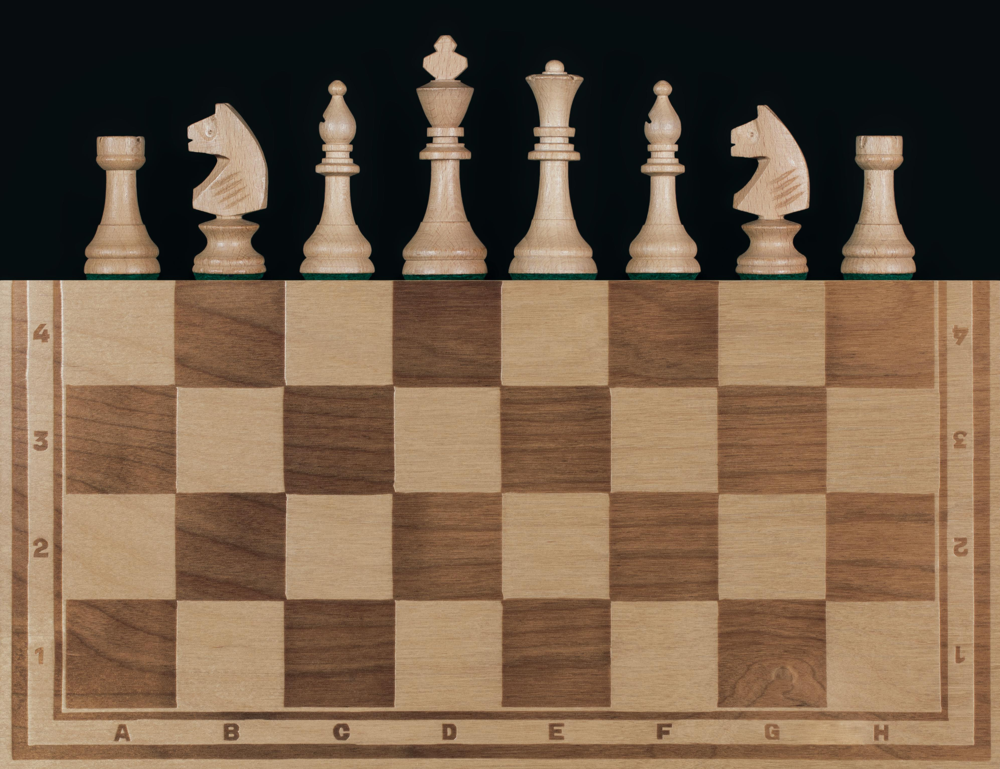
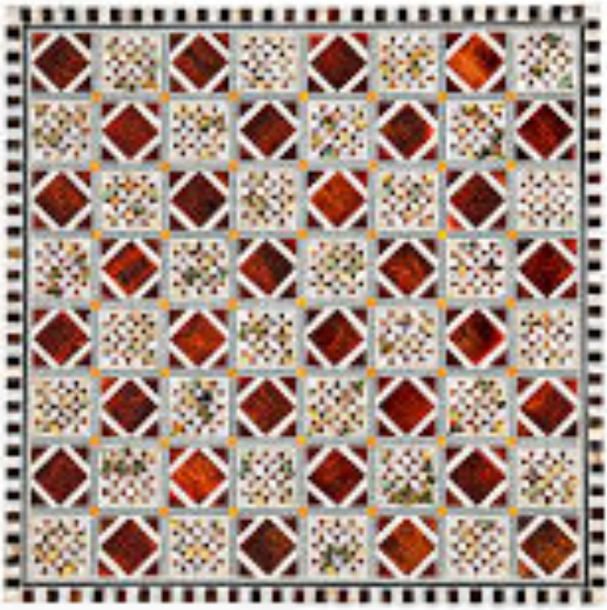
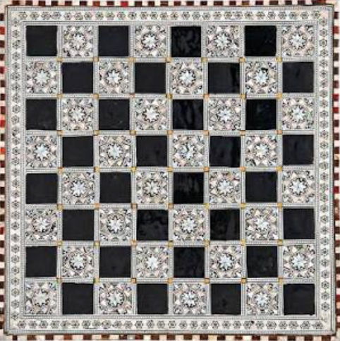
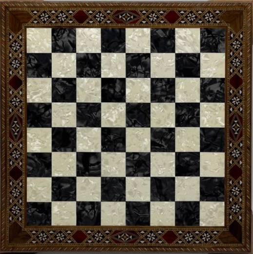
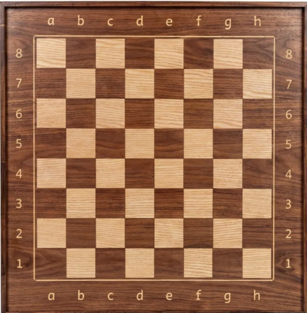
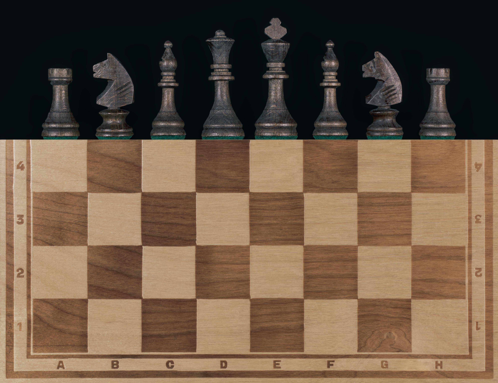
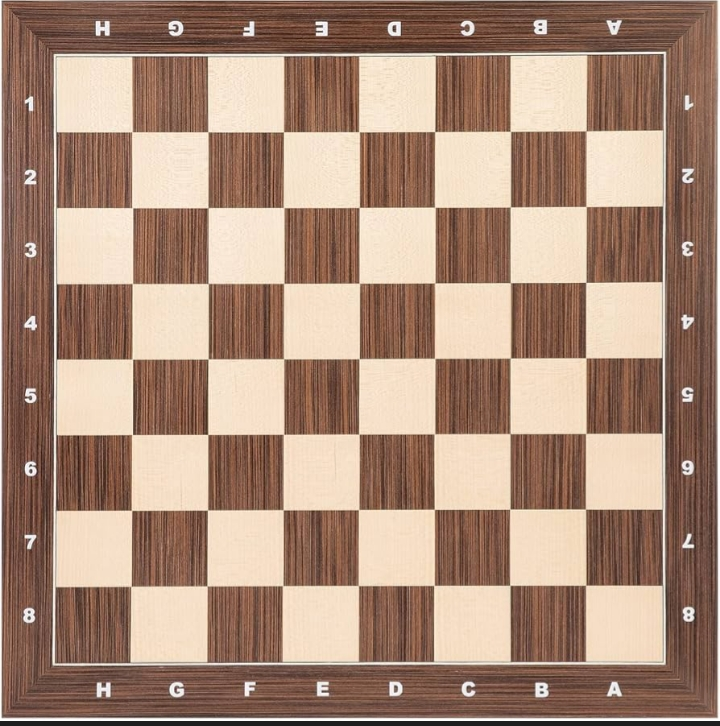
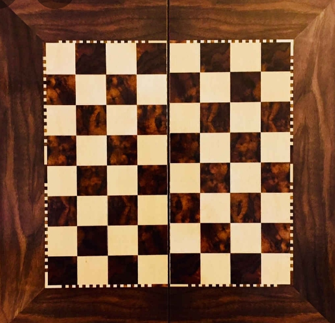
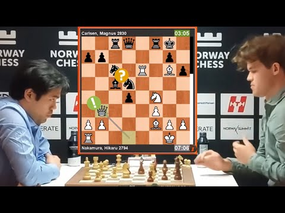

A simple and affordable chess board ideal for beginners. It provides everything needed to learn and enjoy the game in a clear and easy way.
80 EGP
A luxurious chess board with an elegant and royal design. It adds a sense of prestige and sophistication, making every game feel special and high-class.
900 EGP
An elite-level chess board inspired by professional tournaments. It provides a premium experience for players who aim for mastery and excellence.
450 EGP

A beautifully crafted wooden chess board with a natural finish. It combines durability with a classic aesthetic, making it perfect for home and professional use.
50 EGP
A standard square-designed chess board with clear and balanced layout. It ensures smooth gameplay and is suitable for both practice and tournaments.
120 EGP
A high-quality chess board built for serious players. It delivers precision, durability, and a professional feel for competitive games and training.
700 EGP
A timeless chess board designed with traditional style. It offers a simple and elegant look, perfect for beginners and casual players who enjoy the classic experience of chess.
100 EGP
Magnus Carlsen vs Hikaru Nakamura || Norway Chess 2024. A high-level confrontation between the world's top chess titans in one of the most prestigious tournaments. Witness the precision and strategy in this epic battle.
GothamChess breaks down what he calls the most humiliating chess game of his life against Derek. A deep dive into the game that led to a shocking defeat, analyzed with Levy Rozman's signature commentary.